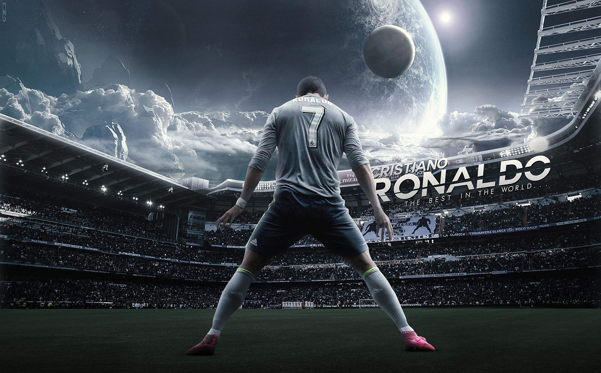

1985-present
"If you don't believe you are the best, then you will never achieve all that you are capable of"
Cristiano Ronaldo dos Santos Aveiro was born on February 5, 1985, in Madeira, Portugal to Maria Dolores dos Santos Aveiro and José Diniz Aveiro. Cristiano has an elder brother, Hugo and two elder sisters, Elma and Liliana Cátia. His name was inspired by the former US-president, Ronald Reagan, whom his father was influenced by. The island of Madeira was also the place where Cristiano first learned to master his skills as a footballer. He spent his early years playing for his local team, Nacional, and by the time he turned 12 years old, he already made his name for himself as one of Madeira's top footballers . It wasn't long before he started to catch the attention of other big Portuguese clubs. Among Sporting was Benfica, a team Cristiano and his father followed as a young boy. However he eventually chose to play for Sporting which was a team his mother loved and followed as she was growing up, to play with the likes of Figo was the dream for her son.